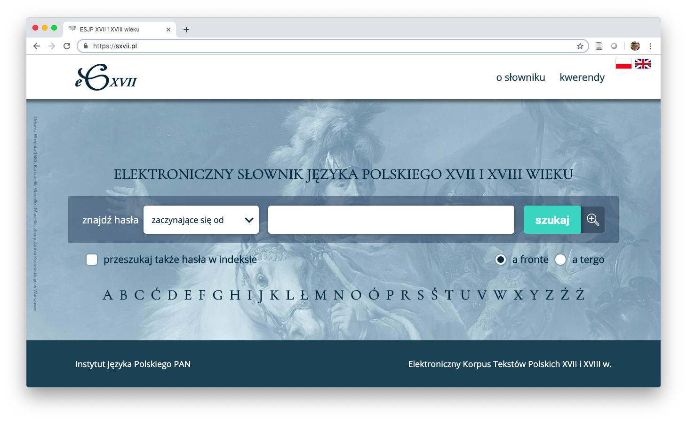
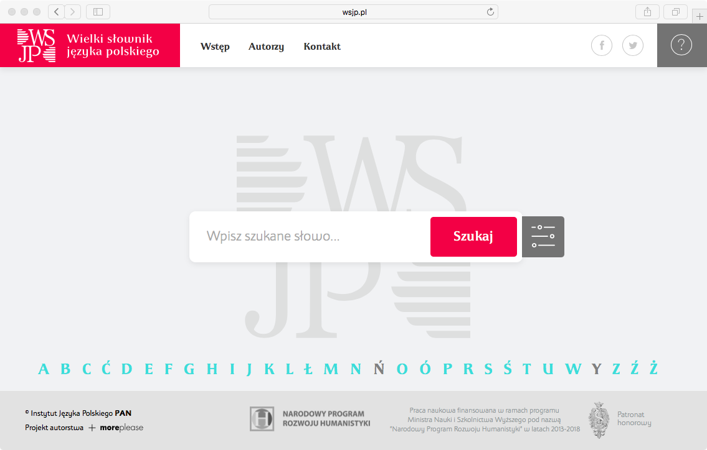
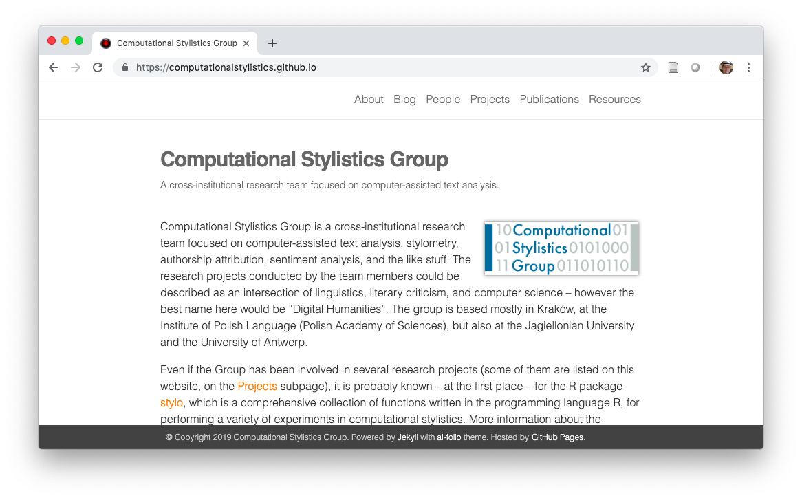
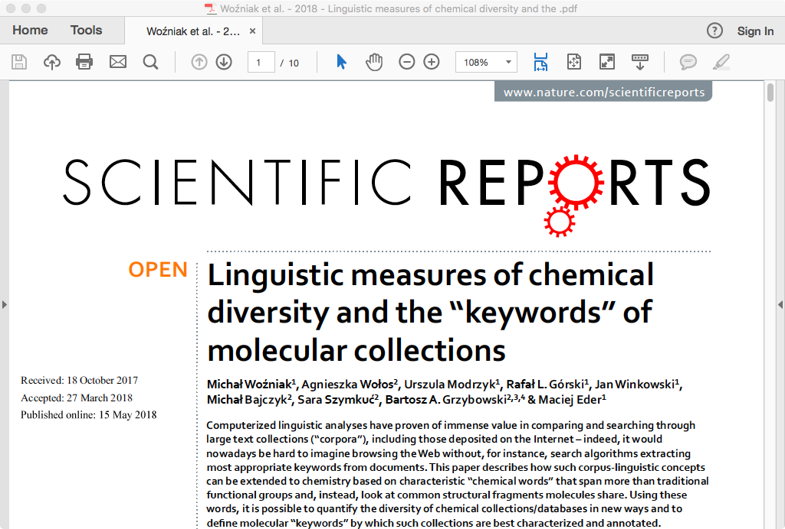
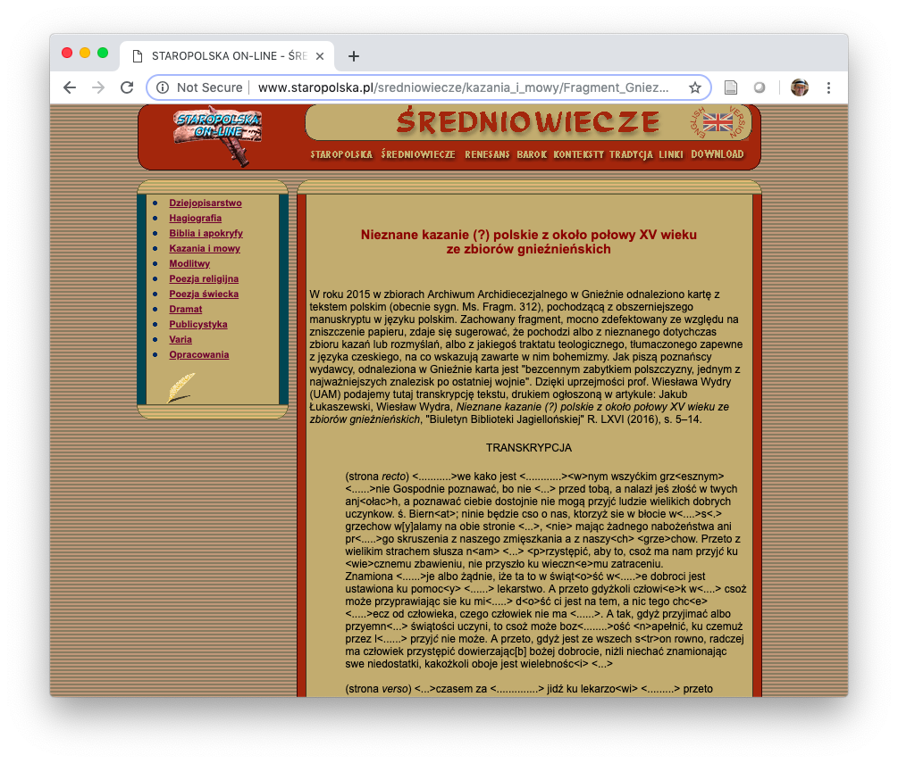
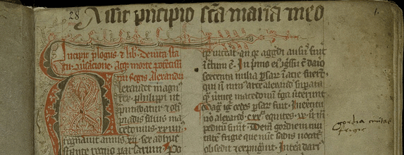
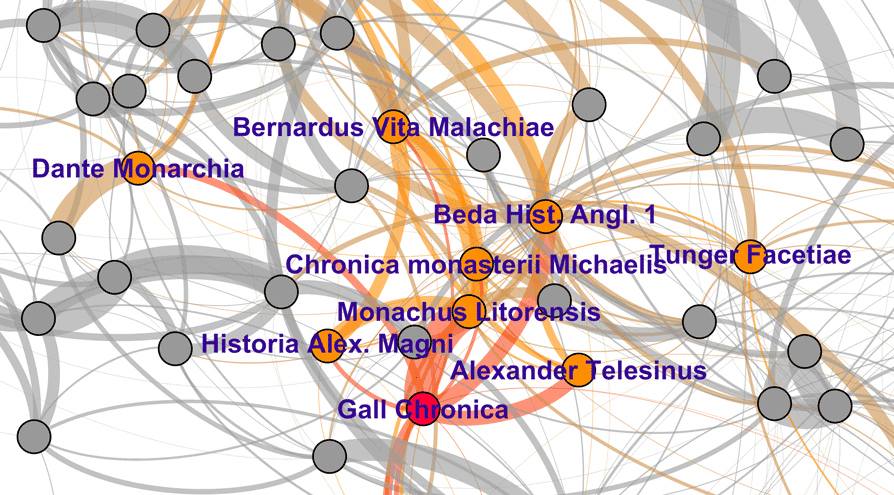
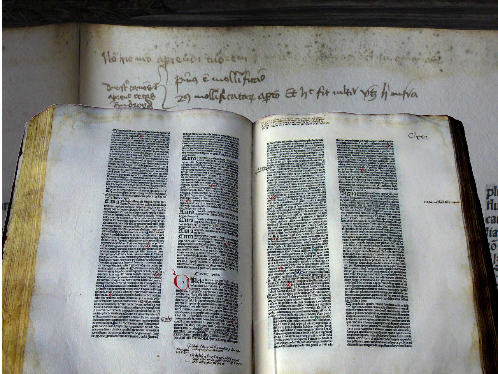

Doskonałość naukowa w humanistyce: filologia w zmieniającym się świecie
Maciej Eder

Instytut Języka Polskiego PAN
- Słownik staropolski
- Wielki Słownik Języka Polskiego
- Słownik polszczyzny XVII i XVIII wieku
- Słownik łaciny średniowiecznej w Polsce
- Słownik gwar polskich
- Słownik gwar Mazur i Ostródzkiego
- Słownik staropolskich nazw osobowych
- Słownik pojęciowy języka staropolskiego
- Ogólnosłowiański Atlas Językowy
- Atlas Języków Europy
SXVII: ofiara własnego sukcesu (?)

WSJP: kamień młyński u szyi IJP PAN (?)

doskonałość naukowa: Cambridge
The mission of the University of Cambridge is to contribute to society through the pursuit of education, learning and research at the highest international levels of excellence.
Doskonałość naukowa: ERC

- High risk / high gain
- vs. incremental knowledge
przeszkody na drodze do doskonałości
- niedostateczna komunikacja (brak synergii)
- niewielki kontekst międzynarodowy, mała mobilność
- zamknięcie się w ciasno zdefiniowanych dyscyplinach
- parametryzacyjny gorset
- niedostateczna aktywność grantowa
synergia
- komunikacja między zespołami badawczymi
- czym się zajmują koledzy z sąsiedniej katedry?
- reguła kanapy i ekspresu do kawy
- zespół jest efektywny, gdy się spotyka
- inicjatywy w Instytucie Języka Polskiego PAN
- Lunch z Humanistyką Cyfrową
- Hortus Deliciarum
- Dialogi Staropolskie
- Spotkania z Gwarą
kontekst międzynarodowy
- oczywiste założenia bywają błędne
- gdzie jest najlepsza polonistyka na świecie?
- wiadomo: gdzieś w Polsce
- po cóż zatem szukać inspiracji za granicą?
- ale: jak to się ma do innych filologii narodowych?
- por. wydziały portugalistyki w Portugalii
- por. wydziały hungarystyki na Węgrzech
- etc. etc.
kontekst międzynarodowy
- filologia narodowa nie może być usprawiedliwieniem
- w naukach o zasięgu lokalnym też obowiązuje najwyższa jakość badań!
umiędzynarodowienie w IJP PAN
- granty o zasięgu międzynarodowym
- COST Action Distant Reading
- COST Action eLexicography
- COST Action Medioevo Europeo
- Deep Learning in Computational Stylistics
- visiting fellows na stażach różnej długości
- Yale University (Fulbright)
- University of Alberta (National Research Council, Canada)
- Universidad de Sevilla (Erasmus+)
- Universität Würzburg (COST Action)
- Università di Padova (COST Action)
- . . .
umiędzynarodowienie przez grupy badawcze

parametryzacja
- buchalteryjne podejście do parametrii zabija ducha nauki
- potrzebna jest odwaga publikowania poza punktacją
- Słownik polszczyzny XVII wieku
- Renaissance Quarterly
- Mississippi Quarterly
- Frontiers in Digital Humanities
- . . .
interdyscyplinarność
- interdyscyplinarność nie może oznaczać a-dyscyplinarności!
- złudzenie, że można osiągnąć doskonałość w kilku dyscyplinach
- rzeczywista interdyscyplinarność: współpraca specjalistów z różnych dyscyplin
wartość: 40 pkt. (= 140 nowych pkt.)

Pascal: dwie nieskończoności
- Podróż w wyobraźni do końca (?) świata
- Podróż w wyobraźni do wnętrza ciała
- I nigdzie nie ma granicy
rewolucja w humanistyce
- Nowe narzędzia: komputer & internet
- Nowe zasoby: miliony książek
- Nowe metody: data mining, machine learning
- Nowe dyscypliny: Digital Humanities
korpus tekstów staropolskich

kim był Gall Anonim?

- teza o podobnieństwie stylistycznym Kroniki Galla i Translacji świętego Mikołaja Mnicha z Lido
Gallus Anonymous vs. Italus Anonymus

rekonstrukcja biblioteki Kopernika

miary korpusowe w chemii organicznej

humanistyka w dzisiejszym świecie
- postprawda i fake news
- detekcja populizmu
- smart cities
- chatboty
- niebezpieczeństwa AI
- . . .
przyszłość już nadeszła
- mamy szansę na przeprowadzenie badań w niespotykanej skali
- przed nami odpowiedzialność za dygitalizację dorobku ludzkości
- przed nami szansa na szukanie dwóch nieskończoności…